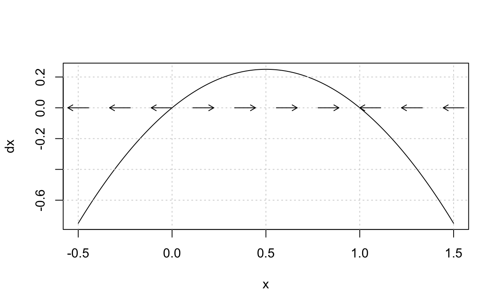

Review of one-dimensional autonomous systems
After reading this section of notes, you should
know what is a one-dimensional autonomous system,
know the concepts of equilibrium and stability for one-dimensional autonomous systems, and
gain familiarity with the concept of a bifurcation for a one-dimensional autonomous system.
Previously, we have observed that for the logistic growth model
\(\frac{dN}{dt} = rN\left(1 - \frac{N}{K}\right),\)
the constant solution \(N=K\) is a stable steady-state (or equilibrium). Further, we stated that the harvesting model
\(\frac{dN}{dt} = rN\left(1 - \frac{N}{K}\right) - h,\)
exhibits a bifurcation that occurs at some critical value for the relationship between the model parameters.
In this section of notes, we review the concepts of equilibrium, stability, and bifurcation for one-dimensional autonomous systems. This material may be familiar from a course in differential equations but we review the basic concepts relevant for Topics in Biomathematics in a self-contained manner. A standard reference for this material is Chapters 2 & 3 of (Strogatz 2015).
We call a differential equation of the form
\(\frac{dx}{dt} = f(x),\)
where \(f\) is a differentiable function on the real numbers a one-dimensional autonomous system. The reason for the term autonomous is based on the fact that the right hand side of the differential equation does not depend explicitly on the time variable \(t\).
Already we have seen examples of one-dimensional autonomous systems as both the logistic growth model and the harvesting models are cases. Further examples include
\(\frac{dx}{dt}=x(1-x)\)
\(\frac{d\theta}{dt}=\sin(\theta)\)
\(\frac{dx}{dt}=x^2 + \alpha\)
Notice that the expression of an one-dimensional autonomous system may depend on one or more parameters. Sometimes it is convenient to make the dependence on parameters explicit. In such cases, we use a semicolon to distinguish the dependent variable from parameters. For instance, for example (c) we may write
\(\frac{dx}{dt}=f(x;\alpha),\)
where \(f(x;\alpha)=x^2 + \alpha\).
An important observation about one-dimensional autonomous systems is, since \(\frac{dx}{dt}\) is (by definition) the local slope of the function \(x\) as a function of \(t\), then by equality \(f(x)\) must also be the local slope of the function \(x\) but now for various values of \(x\) in the domain of \(f\).
The point is, if we sketch a graph of \(y=f(x)\) then we can easily see, based on where the graph is above or below the \(x\)-axis, where \(x(t)\) will be increasing or decreasing, respectively.
For example, we plot \(f(x)=x(1-x)\). The arrows on the \(x\)-axis indicate the increasing (right arrows) or decreasing (left arrows) behavior of the function \(x\).
f <- function(t,x,parameters){list(x*(1-x))}
a_phaseline <- phasePortrait(f,ylim = c(-0.5, 1.5),
points = 10,
frac = 0.5,
state.names = "x")

Such a plot is referred to as a phase-line and the arrows indicate the one-dimensional flow for the point \(x(t)\) as it moves on the line as a parametric function of time \(t\).
If
\(\frac{dx}{dt}=f(x)\)
is an one-dimensional autonomous system, we say that a constant value \(x^{\ast}\) is an equilibrium or steady-state for the system if \(f(x^{\ast}) = 0\). Note that an equilibrium is a (constant) solution to the differential equation. Further, note that equilibrium values are the \(x\)-intercepts for the graph \(y=f(x)\).
Given an one-dimensional autonomous system
\(\frac{dx}{dt}=f(x),\)
one finds the equilibria or steady-states for the system by finding all solutions to the equation \(f(x) = 0\). In general this will be a nonlinear equation. Thus, in some applications it is necessary to utilize a root-finding algorithm such as Newtons method to find (approximately) the equilibrium values. (See also this post.) However, if \(y=f(x)\) can be plotted then the equilibria can be studied qualitatively by using the graph.
Examples:
\(\frac{dx}{dt}=x(1-x)\) has equilibria \(x^{\ast}=0\) and \(x^{\ast}=1\).
\(\frac{d\theta}{dt}=\sin(\theta)\) has equilibria \(x^{\ast}=n\pi\) where \(n\) is an integer.
\(\frac{dx}{dt}=x^2 + \alpha\) has equilibria \(x^{\ast}=\pm\sqrt{-\alpha}\) provided \(\alpha \leq 0\).
Roughly speaking, an equilibrium \(x^{\ast}\) for a one-dimensional autonomous system is said to be stable if, for any initial condition \(x_{0}\) that is sufficiently close to \(x^{\ast}\), the corresponding solution \(x(t)\) to the initial value problem
\[\begin{align} \frac{dx}{dt} &= f(x), \\ x(0) &= x_{0}, \end{align}\]
satisfies \(x(t) \rightarrow x^{\ast}\) as \(t\rightarrow \infty\). We refer to (Strogatz 2015) for a more mathematically rigorous definition of stability.
Consider our previous phase-line plot for \(\frac{dx}{dt}=x(1-x)\). This plot suggests that \(x^{\ast}=1\) is a stable equilibrium while \(x^{\ast}\) is not. Observe that this equation is a special case of the logistic growth model with \(r=1\) and \(K=1\). Thus, for an initial condition \(x_{0}\), the solution to the corresponding initial value problem is
\(x(t) = \frac{x_{0}}{x_{0} + (1-x_{0})e^{-t}},\)
from which it is easy to see that if \(x_{0}\) is close to 1, then \(x(t) \rightarrow 1\) as \(t\rightarrow \infty\).
As another example, lets study the phase-line for \(\frac{dx}{dt}=x^2 - 1\) which is a special case of our example (c) with \(\alpha=-1\). Here is the phase-line:
f2 <- function(t,x,parameters){list(x^2-1)}
a_phaseline <- phasePortrait(f2,ylim = c(-1.5, 1.5),
points = 10,
frac = 0.5,
state.names = "x")
From this phase-line, it appears that \(x^{\ast}=-1\) is a stable equilibrium while \(x^{\ast}=1\) is not. In the next subsection, we will confirm this using an analytic criterion.
Suppose that
\(\frac{dx}{dt}=f(x)\)
is an one-dimensional autonomous system, that \(x^{\ast}\) is an equilibrium, and that \(f\) is continuously differentiable at \(x^{\ast}\). If
\(f'(x^{\ast}) < 0,\)
then \(x^{\ast}\) is a stable equilibrium, while if
\(f'(x^{\ast}) > 0\),
then \(x^{\ast}\) is not a stable equilibrium.
This is referred to as linear stability analysis and the stated criterion is derived in section 2.4 of (Strogatz 2015). See also the blog post on linear stability analysis.
Example:
Consider \(\frac{dx}{dt}=f(x)=x^2-1\) with equilibria \(x^{\ast}=-1\) and \(x^{\ast}=1\). Since \(f'(x) = 2x\), we have
and
Thus, we can conclude that \(x^{\ast}=-1\) is stable and \(x^{\ast}=1\) is not. This corresponds with what we observed in the phase-line plot for this system.
Exercise: To test your understanding of what we have done so far, use both the phase-line and the analytic criteria to determine the stability properties of the equilibria for \(\frac{d\theta}{dt}=\sin(\theta)\).
Consider a one-dimensional autonomous system that depends on a parameter
\(\frac{dx}{dt}=f(x;\alpha),\)
then since the equilibria are (real-valued) solutions in the \(x\) variable to
\(f(x;\alpha) = 0,\)
in general the equilibrium values will be a function of the parameter \(\alpha\). For example, if \(f(x;\alpha)=x^2+\alpha\), then the equilibria are \(x^{\ast}=\pm\sqrt{-\alpha}\) whenever \(\alpha \leq 0\).
We say that a bifurcation occurs at \(\alpha_{c}\) if there is a change in either the number of equilibria or the stability properties of an equilibrium as the value of \(\alpha\) is varied away from \(\alpha_{c}\).
Going back to our example \(\frac{dx}{dt}=x^2+\alpha\), we can already see that there is a bifurcation at \(\alpha_{c}=0\) because
if \(\alpha > 0\), then there are no equilibria,
if \(\alpha = 0\), then there is exactly one equilibrium value, and
if \(\alpha <0\), then there are exactly two equilibria. Further, as the graph of \(f(x) = x^2+\alpha\) indicates whenever \(\alpha <0\), one equilirium will be stable and the other will not. We can confirm this using our analytic criterion. Since \(f'(x) = 2x\), we have
\(f'(\sqrt{-\alpha})=2\sqrt{-\alpha} > 0\) when \(\alpha < 0\), while
\(f'(-\sqrt{-\alpha})=-2\sqrt{-\alpha} < 0\) when \(\alpha < 0\).
The type of bifurcation exhibited by \(\frac{dx}{dt}=x^2 + \alpha\) is known as a saddle-node bifurcation. The key characteristics of any saddle-node bifurcation is that, as one or more parameters are varied, the qualitative behavior of the system is that we observe a sudden appearance of two equilibrium values, one stable, the other not. Thinking back to our previous discussion of the harvesting model, it is apparent that it also exhibits a saddle-node bifurcation.
In general, bifurcation theory is concerned with the study of how the qualitative behavior of solutions to a dynamical system, a system that varies with time, changes as parameters are varied. This is important in biomathematics (as well as other areas of science) because parameter values for a biological system can vary due to environmental impacts, experimental manipulation, effects of disease, etc.
Later in the course we will have cause to analyze the bifurcation behavior of other mathematical models of biological systems. Thus, we will take some time in lecture to learn a little more about bifurcation theory.
The R package phaseR can be used as an aid in the
analysis of one-dimensional autonomous systems. For example, the
following R code produces the phase-line for \(\frac{dx}{dt}=x(1-x)\):
library(phaseR)
f <- function(t,x,parameters){list(x*(1-x))}
a_phaseline <- phasePortrait(f,ylim = c(-0.5, 1.5),
points = 10,
frac = 0.5,
state.names = "x")
This assumes that you have installed the phaseR package.
More details regarding this package will be covered in lecture and
example use can be see in the R for
Biomath page. The phaseR
documentation covers its full usage.
Text and figures are licensed under Creative Commons Attribution CC BY-NC 4.0. The figures that have been reused from other sources don't fall under this license and can be recognized by a note in their caption: "Figure from ...".